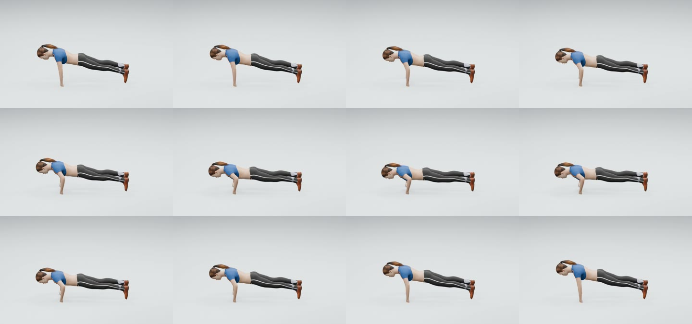

7 УТРО 7
← ПриложениеG2 · 1 цифровой тренер · 1 упражнение
Отжимания — видео
Новое движение одной женской 3D-модели с исправленным ригом. Один контролируемый повтор вместо старой ошибочной анимации. Доступно замедление и покадровый просмотр.
Не принято · только контрольный видеопрототип
0:00 / 0:03.230 кадр/с · 3,2 секунды · без звука
Загрузка видеоповтора…
96кадров
12/12геометрических проверок
1упражнение
Что нужно оценить
- Оба локтя естественно сгибаются в одну сторону, без выворачивания предплечий.
- Ладони и стопы остаются на своих местах, корпус опускается и поднимается единым блоком.
- Темп естественный, переход между концом и началом цикла плавный.
- Пропорции тела и положение плеч, таза и головы выглядят убедительно.
Кадры одного движения

Это техническая демонстрация G2, не профессионально подтверждённое руководство. Автоматические тесты оценивают геометрию, но не безопасность и правильность спортивной техники. В основном приложении данный видеопрототип не используется, пока не пройдёт визуальную и экспертную приёмку.